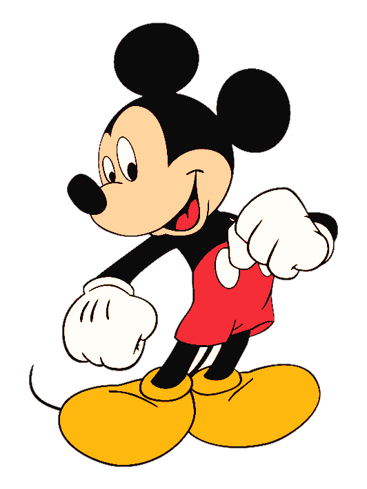

A LITTLE GAME BEFORE LOVE
它有一点害羞，会在屏幕里偷偷跑来跑去。
♫ 请在安静环境，佩戴耳机为佳
成功点击爱心后，故事才会开始

现在跟我一起许下生日愿望吧~
OUR LITTLE ARCHIVE
每一格画面，都是时间替我们珍藏的小小证据。
↔ 滚动滚轮或左右滑动可自由浏览
你有一个生日礼物，请签收~
把愿望藏进每一颗闪亮的心里
有些心意，要亲手拆开才算数
FOR MY DEAREST
愿你每一个愿望，都在未来被温柔接住。
请先抓住屏幕中移动的红心，进入生日故事。
请开启 JavaScript 以观看完整的生日故事。